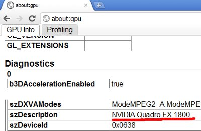

Проблемы и решения¶
Инициализация WebGL¶
Сайт http://get.webgl.org/ при просмотре в браузерах Chrome или Firefox последней версии сообщает о проблемах. Что делать?
На Windows:
- Установить доступные обновления для системы. Установить последнюю версию DirectX. Перезагрузить систему.
- В некоторых случаях может понадобиться установка драйверов от производителей графических карт. Чтобы определить тип и производителя карты, можно воспользоваться средством диагностики DirectX...
{kind=link}
или ввести about:gpu в адресную строку браузера Chrome.
{kind=link}
Необходимо загрузить драйверы с соответствующего центра поддержки (например, Intel, Nvidia, AMD/ATI). После установки драйверов перезагрузить систему.
- Если в результате вышеперечисленных действий инициализировать рендеринг не удается (или нет возможности обновить систему), можно попробовать изменить настройки браузера.
В Chrome:
Ввести about:flags в адресную строку браузера, нажать Включить (Enable) под опцией Переопределение списка программного рендеринга (Override software rendering list) и перезапустить браузер.

В Firefox:
Ввести about:config в адресную строку браузера, найти параметр webgl.force-enabled и переключить его двойным щелчком мыши из false в true.

На Linux:
Ввиду неполной реализации OpenGL стека в драйверах с открытым кодом в настоящий момент рекомендуется использовать проприетарные драйверы текущей версии для графических процессоров Nvidia и AMD.
Форсирование графической акселерации из п. 3 для Windows происходит аналогично для Chrome. В случае Firefox предлагается использовать переменную окружения:
> MOZ_GLX_IGNORE_BLACKLIST=1 firefox
Настройка браузера для загрузки локальных ресурсов¶
Движок является Web-приложением, и его работа происходит при просмотре html-файла в браузере. После инициализации происходит загрузка ресурсов (сцен, текстур), которая подчиняется правилу ограничения домена, запрещающему, в частности, загрузку из локальной директории. Простым способом обхода этого ограничения может быть настройка браузера (рекомендуется). Другой способ заключается в использовании локального web-сервера.
Note
Рекомендуется использовать такой браузер только для просмотра локального контента, поскольку изменение настроек может привести к понижению безопасности.
Chrome на Windows:
Правой кнопкой мыши нажать на ярлыке на рабочем столе, выбрать Свойства (Properties), после чего в поле для пути к исполняемому файлу добавить после пробела --allow-file-access-from-files. Нажать ОК.

Для удобства можно предварительно создать копию ярлыка и изменить ее для локального просмотра, оставив оригинальную версию ярлыка для запуска браузера в обычном режиме.
Chrome/Chromium на Linux:
Запустить браузер с параметром:
> google-chrome --allow-file-access-from-files
или:
> chromium-browser --allow-file-access-from-files
Firefox на Windows/Linux:
Ввести about:config в адресную строку браузера, найти параметр security.fileuri.strict_origin_policy и переключить его двойным щелчком мыши из true в false.

Использование локального web-сервера¶
Простым вариантом может быть запуск web-сервера из стандартной библиотеки Python.
На Windows:
Загрузить и инсталлировать последнюю версию Python с официального сайта. На сегодняшний день это версия 3.2, и по умолчанию установка произойдет в директорию Python32 на диске C.
Запустить командную строку (Command Prompt).
Выполнить команды:
> c: > /Python32/python -m http.server
Перейти на страницу http://localhost:8000, на которой выбрать нужный файл для отображения.
На Linux:
> python -m SimpleHTTPServer
или:
> python3 -m http.server
Можно указать порт дополнительным параметром:
> python -m SimpleHTTPServer 8080
Проблемы при запуске рендерера¶
1. Появляется сообщение “browser not supported”.
Браузер не поддерживается.
2. Появляется сообщение “underlying error”.
Следует выполнить действия, описанные в разделе Инициализация WebGL.
3. Видны элементы интерфейса и фон, но не виден куб или он отображается не корректно. При этом тестовый сайт http://get.webgl.org/ и другие примеры работают корректно.
Вероятные причины:
- Браузер не настроен или не правильно настроен для работы с локальными ресурсами. Настройка браузера для загрузки локальных ресурсов.
- Файлы ресурсов, которые пытается загрузить рендерер, были перемещены или удалены.
- На Linux при использовании графических процессоров Intel, а также Nvidia и AMD с открытыми драйверами, это может происходить по причине использования рендерером возможностей (стандартных), в настоящий момент не реализованных в Mesa (таких как uniform массивы в шейдерах).